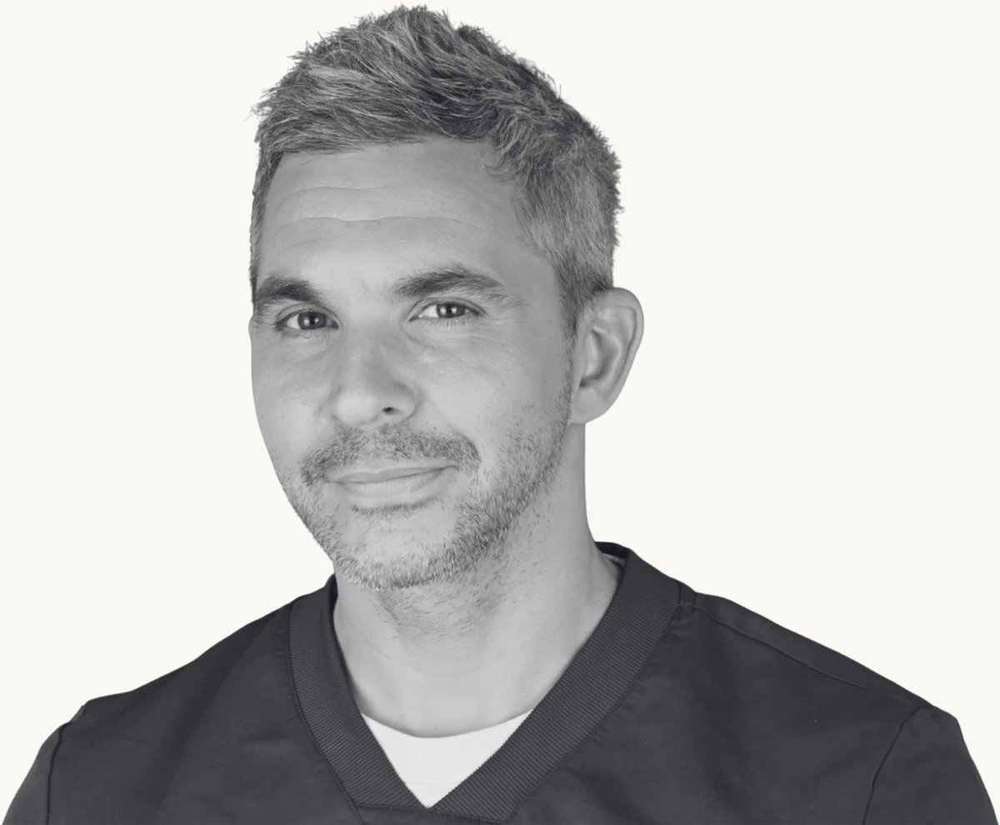

Accueil › Dr Franck Moyal
Mon parcours
Dr Franck Moyal
Chirurgien-dentiste, Paris 9ᵉ
Ma pratique s’est construite à la rencontre de la clinique, de l’hôpital et de l’enseignement. Elle repose sur une idée simple : le diagnostic compte autant que le geste technique. L’objectif n’est pas de traiter davantage, mais de traiter juste — avec un haut niveau d’exigence esthétique, fonctionnelle et de préservation tissulaire.

1 / 5
Quelle est la pratique du Dr Franck Moyal ?
Le Dr Franck Moyal exerce à Paris en pratique privée, orientée vers la dentisterie esthétique et adhésive et vers les usures dentaires, en parallèle d’une activité hospitalière et d’enseignement.
Dentisterie esthétique et adhésive
J’exerce à Paris avec une pratique privée exclusivement orientée vers la dentisterie esthétique et adhésive. Cela comprend notamment les facettes, le composite bonding, l’éclaircissement, le traitement des dyschromies et la planification esthétique.
Modifier un sourire ne commence pas par choisir une technique. Le projet commence par comprendre ce que le patient souhaite réellement changer, puis par analyser ce qui peut être obtenu avec le niveau d’intervention le plus adapté.
Comprendre les usures avant de les reconstruire
Les usures dentaires constituent un autre axe majeur de ma pratique. Elles peuvent être mécaniques, érosives ou multifactorielles. Leur prise en charge repose sur l’identification des causes, l’analyse de leur évolution, la prévention et, lorsque cela est indiqué, une réhabilitation adhésive visant à restaurer à la fois fonction, esthétique et volumes dentaires.
2 / 5
Quel est le parcours du Dr Franck Moyal ?
Docteur en chirurgie dentaire depuis 2008, il exerce depuis en pratique privée à Paris, à l’hôpital Pitié-Salpêtrière depuis 2012 et à la CMME de l’hôpital Sainte-Anne depuis 2024.
Repères
- 2008
Diplôme d’État de docteur en chirurgie dentaire
Université Paris VII. Thèse : « Le rôle de l’odonto-stomatologiste dans le dépistage et le diagnostic des cancers de la cavité buccale ». Début de l’exercice en pratique privée, à Paris.
- 2012
Praticien hospitalier à la Pitié-Salpêtrière
Service de médecine bucco-dentaire de l’hôpital Pitié-Salpêtrière (AP-HP), au sein de la PASS bucco-dentaire.
- 2014
Diplôme interuniversitaire de carcinologie buccale
UFR Paris 7.
- 2016
Certificat d’implantologie clinique, esthétique et fonctionnelle
PACT Implant.
- 2017
Chirurgien-dentiste de réserve
Service de santé des armées.
- 2023
Publication de la « Front Wing Technique »
Fermeture de diastème au composite en technique directe (Le Fil Dentaire).
- 2024
Praticien attaché à la CMME, hôpital Sainte-Anne
Mise en place, avec les chefs de service, d’une consultation de dépistage bucco-dentaire des érosions liées aux TCA.
- 2025
Responsable de la consultation des internes
En dentisterie esthétique et usures, à la Pitié-Salpêtrière.
- 2025
Fondateur et président de l’association DenTCA
Formation continue
Réhabilitation des dents usées
Technique « 3 Step » de Francesca Vailati, niveaux 1 et 2 (2019, dix jours).
Composite
Daily Menu, Style Italiano (2018) ; stratification des composites antérieurs, DCO (2018) ; injection de composite fluide, G. Piskorski (2024) ; composites en teintes naturelles et bleach veneers, cours pratique du Dr Sche (2026, 27 heures).
Esthétique et préparations
Esthétique 2.0, Dent’Arts (2022) ; Vertipreps et reconstitutions sans tenon, D. Gerdolle (2023).
Gencive et tissus mous
Paroplastic Académie, cycles 1 et 2 (2025) ; masterclass tissus mous de Ricardo Kern (2025).
Occlusion
Occlusal Overview (2026, 27 heures).
Photographie dentaire
DCO (2018).
Contentions fibrées
Cycles 1 à 3, Eumeria (2017–2021).
Endodontie
Advanced Class, Endo Académie (2020–2021).
Implantologie
IFIP (2026).
Anatomie de la tête et du cou
Dissection et imagerie, AITEC (2015).
Sédation consciente
MEOPA (2014).
Engagements
Président fondateur de DenTCA
Association pour la promotion des soins dentaires chez les patients atteints de troubles des conduites alimentaires (2025).
Secrétaire général
Association des chirurgiens-dentistes de réserve de la région de Saint-Germain-en-Laye (depuis 2017).
Numéro RPPS (répertoire partagé des professionnels de santé) : 10005198790.
3 / 5
Quel est son lien avec les troubles des conduites alimentaires (TCA) ?
Depuis 2024, il est praticien attaché à la CMME (Clinique des Maladies Mentales et de l’Encéphale) de l’hôpital Sainte-Anne, où il a participé, avec les chefs de service, à la mise en place d’une consultation de dépistage bucco-dentaire des érosions liées aux troubles des conduites alimentaires.
Cette activité a renforcé une conviction clinique importante : l’érosion dentaire est souvent multifactorielle et sa prévention commence par un dépistage précoce.
4 / 5
Enseignement et hôpital : quelles sont ses autres activités ?
Il a fondé Smileclub Formation, organisme destiné aux chirurgiens-dentistes, et exerce aussi dans le service de médecine bucco-dentaire de l’hôpital Pitié-Salpêtrière, notamment dans le cadre de la PASS bucco-dentaire.
Transmettre oblige à structurer sa pratique
L’enseignement occupe une place importante dans mon activité. Je suis fondateur de Smileclub Formation, organisme destiné aux chirurgiens-dentistes, et j’interviens régulièrement sur la dentisterie esthétique, les composites, les usures dentaires, la photographie clinique et la planification esthétique.
5 / 5
Quelle est sa philosophie de soin ?
Préserver les dents sans renoncer à transformer un sourire, et toujours commencer par un diagnostic : c’est ce qu’il appelle « traiter juste ».
Préserver les tissus dentaires ne signifie pas renoncer à transformer un sourire. Les techniques adhésives contemporaines permettent au contraire de rechercher des résultats esthétiques ambitieux tout en limitant autant que possible les préparations dentaires. Cette logique de gradient thérapeutique traverse l’ensemble de ma pratique.
Une consultation commence par un diagnostic
La première étape consiste à comprendre la situation clinique et le projet du patient. Le traitement vient ensuite.
Prendre rendez-vous